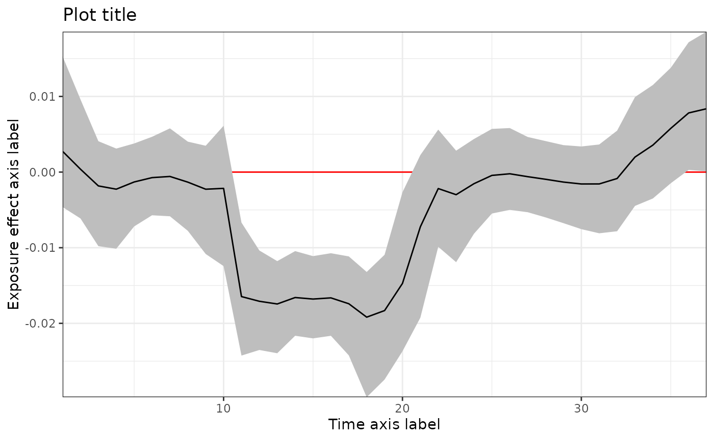

This vignette demonstrates the implementation of treed distributed lag model (TDLM). More details can be found in Mork and Wilson (2023) <doi: 10.1111/biom.13568>.
Load data
Simulated data is available on GitHub. It can be loaded with the following code.
sbd_dlmtree <- get_sbd_dlmtree()Data preparation
# Response and covariates
sbd_cov <- sbd_dlmtree %>%
select(bwgaz, ChildSex, MomAge, GestAge, MomPriorBMI, Race,
Hispanic, MomEdu, SmkAny, Marital, Income,
EstDateConcept, EstMonthConcept, EstYearConcept)
# Exposure data
sbd_exp <- list(PM25 = sbd_dlmtree %>% select(starts_with("pm25_")),
TEMP = sbd_dlmtree %>% select(starts_with("temp_")),
SO2 = sbd_dlmtree %>% select(starts_with("so2_")),
CO = sbd_dlmtree %>% select(starts_with("co_")),
NO2 = sbd_dlmtree %>% select(starts_with("no2_")))
sbd_exp <- sbd_exp %>% lapply(as.matrix)Fitting the model
tdlm.fit <- dlmtree(formula = bwgaz ~ ChildSex + MomAge + MomPriorBMI +
Race + Hispanic + SmkAny + EstMonthConcept,
data = sbd_cov,
exposure.data = sbd_exp[["PM25"]], # A single numeric matrix
family = "gaussian",
dlm.type = "linear",
control.mcmc = list(n.burn = 2500, n.iter = 10000, n.thin = 5))#> Preparing data...
#>
#> Running TDLM:
#> Burn-in % complete
#> [0--------25--------50--------75--------100]
#> ''''''''''''''''''''''''''''''''''''''''''
#> MCMC iterations (est time: 24 seconds)
#> [0--------25--------50--------75--------100]
#> ''''''''''''''''''''''''''''''''''''''''''
#> Compiling results...Model fit summary
#> ---
#> TDLM summary
#>
#> Model run info:
#> - bwgaz ~ ChildSex + MomAge + MomPriorBMI + Race + Hispanic + SmkAny + EstMonthConcept
#> - sample size: 10,000
#> - family: gaussian
#> - 20 trees
#> - 2500 burn-in iterations
#> - 10000 post-burn iterations
#> - 5 thinning factor
#> - exposure measured at 37 time points
#> - 0.95 confidence level
#>
#> Fixed effect coefficients:
#> Mean Lower Upper
#> *(Intercept) 2.289 2.032 2.542
#> *ChildSexM -2.105 -2.126 -2.085
#> MomAge 0.000 -0.001 0.002
#> *MomPriorBMI -0.021 -0.022 -0.019
#> RaceAsianPI 0.069 -0.057 0.192
#> RaceBlack 0.078 -0.050 0.205
#> Racewhite 0.059 -0.060 0.181
#> *HispanicNonHispanic 0.255 0.233 0.278
#> *SmkAnyY -0.403 -0.451 -0.356
#> EstMonthConcept2 -0.049 -0.109 0.010
#> *EstMonthConcept3 -0.145 -0.211 -0.077
#> *EstMonthConcept4 -0.230 -0.295 -0.160
#> *EstMonthConcept5 -0.207 -0.265 -0.147
#> *EstMonthConcept6 -0.205 -0.260 -0.153
#> EstMonthConcept7 -0.032 -0.083 0.023
#> *EstMonthConcept8 0.145 0.081 0.210
#> *EstMonthConcept9 0.393 0.326 0.460
#> *EstMonthConcept10 0.372 0.311 0.437
#> *EstMonthConcept11 0.330 0.271 0.387
#> *EstMonthConcept12 0.129 0.078 0.181
#> ---
#> * = CI does not contain zero
#>
#> DLM effect:
#> range = [-0.019, 0.008]
#> signal-to-noise = 0.021
#> critical windows: 11-20,36-37
#> Mean Lower Upper
#> Period 1 0.003 -0.005 0.015
#> Period 2 0.000 -0.006 0.010
#> Period 3 -0.002 -0.010 0.004
#> Period 4 -0.002 -0.010 0.003
#> Period 5 -0.001 -0.007 0.004
#> Period 6 -0.001 -0.006 0.005
#> Period 7 -0.001 -0.006 0.006
#> Period 8 -0.001 -0.008 0.004
#> Period 9 -0.002 -0.011 0.003
#> Period 10 -0.002 -0.012 0.006
#> *Period 11 -0.016 -0.024 -0.007
#> *Period 12 -0.017 -0.024 -0.010
#> *Period 13 -0.017 -0.024 -0.012
#> *Period 14 -0.017 -0.022 -0.010
#> *Period 15 -0.017 -0.022 -0.011
#> *Period 16 -0.017 -0.022 -0.011
#> *Period 17 -0.017 -0.024 -0.011
#> *Period 18 -0.019 -0.030 -0.013
#> *Period 19 -0.018 -0.027 -0.011
#> *Period 20 -0.015 -0.024 -0.003
#> Period 21 -0.007 -0.019 0.002
#> Period 22 -0.002 -0.010 0.006
#> Period 23 -0.003 -0.012 0.003
#> Period 24 -0.002 -0.008 0.004
#> Period 25 0.000 -0.005 0.006
#> Period 26 0.000 -0.005 0.006
#> Period 27 -0.001 -0.005 0.005
#> Period 28 -0.001 -0.006 0.004
#> Period 29 -0.001 -0.007 0.004
#> Period 30 -0.002 -0.008 0.003
#> Period 31 -0.002 -0.008 0.004
#> Period 32 -0.001 -0.008 0.005
#> Period 33 0.002 -0.004 0.010
#> Period 34 0.004 -0.003 0.012
#> Period 35 0.006 -0.001 0.014
#> *Period 36 0.008 0.000 0.017
#> *Period 37 0.008 0.000 0.019
#> ---
#> * = CI does not contain zero
#>
#> residual standard errors: 0.004
#> ---Exposure effect
plot(tdlm.sum,
main = "Plot title",
xlab = "Time axis label",
ylab = "Exposure effect axis label")